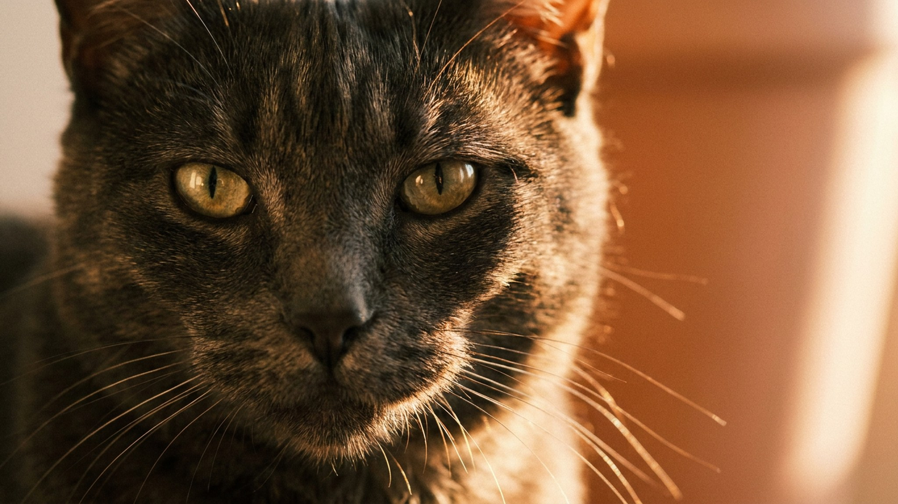

Бомбей приходит в комнату и сразу ложится рядом — не рядом с диваном, а именно на колени. Через час он там же. Бомбейская кошка выглядит как мини-пантера, но ведёт себя как тень: следует за хозяином по квартире, ждёт у двери и болезненно переживает, если остаётся одна. Вот четыре черты характера, которые стоит знать до того, как бомбей появится в доме.
🐾 Экономьте на лишних визитах к врачу
Сначала спросите AI-ветеринара в AnimaLife — часто этого достаточно, чтобы понять, нужен ли визит к врачу.
Бомбей, как правило, выбирает одного — «своего» человека в семье. Именно с ним бомбейская кошка проводит большую часть дня: дремлет рядом, лежит на клавиатуре, провожает в ванную и встречает у двери. Это не невроз — это порода: бомбей изначально выводился как компаньон, и контакт с человеком для него так же важен, как сон и еда.
С остальными членами семьи бомбей тоже дружелюбен, но избранник всегда один. Если этот человек надолго уходит — кошка это замечает и может стать менее активной.
Бомбей не из тех кошек, которые спокойно спят весь день в ожидании хозяина. Долгое одиночество этой породе даётся тяжело: бомбей может начать голосить, отказываться от игр или искать внимание у всего, что движется.
Бомбейская кошка общительна: мяукает, когда хочет внимания, комментирует происходящее и охотно идёт знакомиться с гостями. В отличие от многих азиатских пород, голос у бомбея мягкий — не пронзительный. Разговоры с хозяином для этой породы норма, а не тревожный сигнал.
Гости в доме бомбея не пугают — он скорее первым подойдёт обнюхать незнакомца, чем спрячется под кровать. Эта черта делает бомбея удобным питомцем для семей с детьми и активной социальной жизнью.
Бомбей буквально ищет тёплое: греется под одеялом, устраивается на радиаторе, залезает под плед к хозяину. Это не прихоть — порода чувствительна к температурным перепадам, и тепло для бомбея означает безопасность.
Бомбейская кошка — идеальный выбор для тех, кто много времени проводит дома и готов к тесному ежедневному контакту с питомцем. Одинокий человек, пара без детей, семья с внимательными детьми — бомбей впишется во все эти сценарии легко.
Если же хозяин работает сутками или часто путешествует — стоит либо обеспечить бомбею компаньона, либо выбрать более самостоятельную породу. Бомбей без общения становится тревожным, и это сказывается на его самочувствии.
🐾 Всё о вашем питомце — в одном приложении
AI-ветеринар, дневник, напоминания о прививках и уходе. Установите AnimaLife — это бесплатно, в Telegram и MAX.
🐾 Понравился разбор?
Подпишитесь на канал — каждый день разбираем по одному тревожному симптому у кошек и собак: что в пределах нормы, а когда пора к врачу. Подпишитесь, чтобы не пропустить разбор, который может спасти здоровье вашего питомца.
Материал носит информационный характер и не заменяет очную консультацию ветеринара.